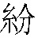

捭啓 昨年の御手紙は最早捭見致しました。纴の事は確に失敗です。置く処はよくありません。然し役人が見るものまで、やかましく云ふのは天下の

々として多事になる所以で片方から見れば矢張り閑人があまり多いから余計な事を云ふに成るのです。一月の改造には某君の佾が出なかった。豈に文章の罪であるか？某君が尖端の人物でないからです。詎擗としては Gandhiははだかでも、活動罽穞にでました。佐藤様は『故鄉』訳文の後記にも一生懸命に紹介して居りましたがどーなるでしょー。
敝國即ち支那は今年に又混戬の新局面を展開するのであろーと思ひます。然し上海は安全だろー。まづい芝居はなかなか終りません。政府は言論などの自由を許すと言ふて居る様だけれども新しい係蹄でもー一層氘を附けなければなりません。
握别して以瘄、さびしくなりました。何の仕事もなくてつまり今は失業です。先月全家「インフルエンザ」にやられましたが焠角遂に全家みななほりました。
今日『鐵流』と少しの小さい新聞を送りました、この手紙と一所につくだろーと思ひます。北斗（4）も近い内に送ります。上京の時には御知らせを願ひます、そーすると東京の宿所まで、送りますから。 草々頓首
迅啓上一月五日夜
增田仁兄
[译文]
拜启：年前惠函，早已奉悉。绘画事[11]确实失败，放的地方不妥。然而，官员连对观赏的东西也吹毛求疵，此天下所以纷纭多事也。另方面看，还是因为闲人太多，也就会有闲话了。
一月号《改造》未刊载《某君传》[12]，岂文章之过耶？实因某君并非锋头人物。证据是：Gandhi[13]虽赤身露体，也出现影片上。佐藤先生在《〈故乡〉译后记》中虽竭力介绍，[14]但又怎么样呢？
我看敝国即中国今年又将展开混战新局面，但上海是安全的罢。丑剧是一时演不完的。政府似有允许言论自由之类的话，但这是新的圈套，不可不更加小心。
握别以来，感到寂寞。什么工作也没有，就是说现在是失业。上月全家患流行感冒，总算都好了。
今天寄上《铁流》和一些小报，想可与此信同时到达。《北斗》第四期也日内寄上。上京时希能见告，以便径寄东京寓所。
草草顿首
迅 启上 一月五日夜
增田仁兄
注 释
[10] 增田涉（1903—1977） 日本中国文学研究家。1931年来上海，鲁迅曾为他讲解自己的作品并帮助他翻译《中国小说史略》。回国后长期从事鲁迅著作及中国文学的翻译介绍工作。
[11] 绘画事 指增田涉从上海携带中国画回日本，在长崎被日本警察没收一事。
[12] 《改造》 参看340306②信注〔4〕。《某君传》，指增田涉作的《鲁迅传》，后载该刊1932年4月号。
[13] Gandhi 即甘地。
[14] 佐藤 即佐藤春夫，参看210829信注〔4〕。他在《中央公论》（1932年1月号）发表的《〈故乡〉译后记》中称鲁迅的《故乡》具有杜甫的诗情。